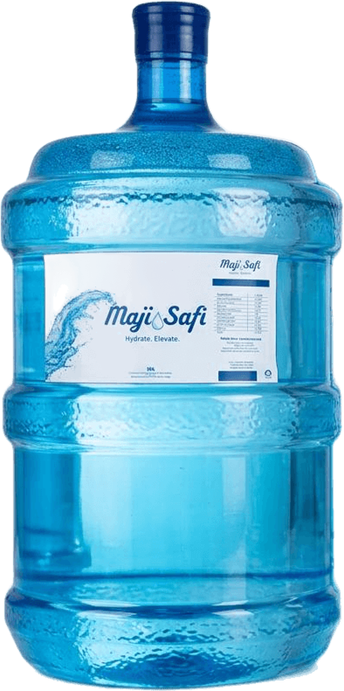
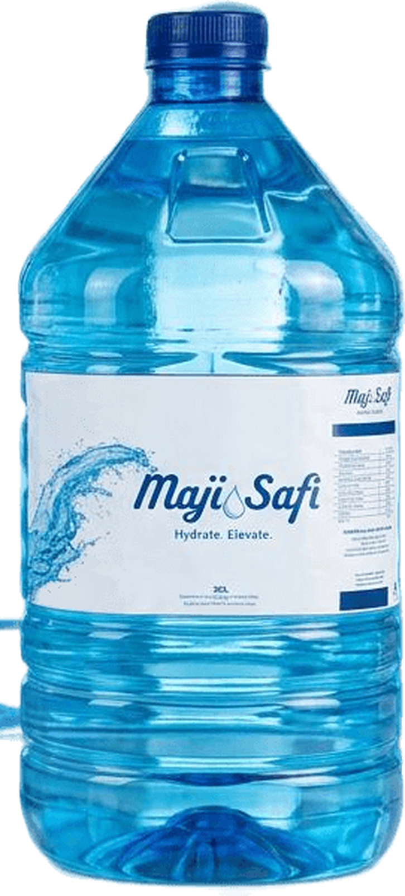

Concept cans · Safiflow Ventures Group, trading as Maji Safi · October 2026
Belize Spring Water
How Maji Safi can bring a named Belize spring to homes, resorts and visitors: the market, the money, the products and how we set up.
BZ$51M
spent on home water jars every year
0
spring water brands in Belize today
552K
visitors a year, 69% American
US$3.6M
a year in sales by year 5 at a 10% share (estimate)
In one line: a partner's spring, treated by our Safi Treatment systems, sold as 20 L jars and cans. Premium, sealed, named. For Amanuel, Mike and Sammy.
Draft for discussion · all numbers sourced in the data notes · estimates marked
1
Maji Safi · BelizeThe country
Page 2 · Belize at a glanceA small country with a big visitor economy, next door to North America
397K
people · 110,719 homes
US$3.6B
GDP (2024), grew ~8% in 2024
60%
of foreign currency comes from tourism
552K
overnight visitors (2025)
967K
cruise visitors (2025)
2 : 1
BZ$ to US$, fixed · English-speaking
What drives the economy
Tourism: the biggest earner, mostly Americans
Agriculture and fishing: sugar, bananas, citrus, seafood (~8% of GDP)
Trade, transport, outsourcing
What it means for us
Visitors want premium water, often in cans
US dollars and English make deals with North America easy
Growth slowed in 2025, so prove demand first
Red: biggest city · Teal: main visitor island
SIB 2022 Census · US State Dept 2025 Investment Climate Statement · IMF Country Report 25/262 · BTB preliminary 2025 · Coface
2
Maji Safi · BelizeHow Belize drinks
Page 3 · What people drink and what sells mostThe 5-gallon jar is the volume. The small bottle and can are the margin.
What sells, by pack (our reading of the market)
Pack
Who buys
Typical price
Role
5-gallon / 20 L jar
74% of homes, offices
BZ$6
Most litres
500 ml bottle
Shops, visitors, events
BZ$1–3
Most units
1 L · 1.75 L · 1 gal
Families, stores
~BZ$2–5
Take-home
Pouch (sachet)
Low-income, schools
BZ$0.25
Being phased out
Can
Resorts, bars, visitors
~BZ$4
Premium, only imports
Why people buy: 84% of homes have piped water, yet 74% buy what they drink, because E. coli shows up at home (33.7% of samples). Sealed, named, tested water wins.
Litres a year, by channel (estimate)
BZ$51M
home jar market a year
BZ$0.32
a litre in a jar, vs BZ$11 in an imported can
Jars carry the volume and repeat buyers. Cans and small bottles carry the price. We start with both.
SIB 2022 Census · MICS7 Nov 2025 · Crystal sizes: bevco.bz · pouch phase-out: Greater Belize · litre estimates in the data notes
3
Maji Safi · BelizePlayers and their products
Page 4 · Who sells what, and who we could partner withEveryone sells purified water. Nobody owns spring, and nobody owns the can.
Brand
Where
Products
Water
Partner idea
Crystal by Dasani Bowen & Bowen · new name Oct 2026
National, 4 plants
500 ml · 1 L · 1.75 L · 1 gal · 5-gal jar · pouch
Double RO
Canning or distribution deal
Bowen & Bowen
National
Soft drinks; 12 oz glass at BZ$1; line fills 22,000 bottles/hour
n/a
Price benchmark
Zeta
Belmopan, Corozal
5-gal jars · ice
RO + UV
Fill or deliver our jars
Aquatic Premium
Orange Walk
Jar delivery · ice
Purified
Northern delivery
Aquazul
To verify
5-gal jars · ice · delivery
Purified
Local route
BEL AquA
Bluefield Foods
Purified water (since 2006)
Purified
Food distribution
Agua Dulce
San Pedro
Purified water
Purified
Island distribution
Filter Pure
National
Home and business RO systems
RO
Sell/service Safi Treatment
Refill stations
Grocery stores
Refill your own jar
Varies
Spring refill supply
Imports
Visitor shops
Sparkling cans (e.g. La Croix ~BZ$4)
Imported
Shows can demand
Our spot
The only named spring, in jars and cans.
The big signal: the market leader just rebranded to "Crystal by Dasani". Global brands see value here; a local premium spring is still open.
Partner, not fight: local jar plants already have trucks and customers. Our water and treatment make them better.
Ambergris Today, 9 Oct 2026 · bevco.bz · 7News Belize 2016 · business directories (to verify)
4
Maji Safi · BelizeWho we are
Page 5 · Maji Safi as a water treatment companyWe design, build and run treatment, and we sell our own water
Safiflow Ventures Group
The parent company: water treatment technology. Design, build, install, service.
Maji Safi
Our water brand. Plant running daily in Kampala at ~6,000 L/h. Zero E. coli in accredited lab tests.
Safi Treatment
Our system family: 10 modules, 500 to 20,000 L/h. Built to East African Standards (EAS 153, 39, 38).
All our treatment systems
System
Flow
Per day (10 h)
Fits Belize for
Safi S
500–1,000 L/h
5–10 m³
A small pilot, a resort, a village
Safi M (our Kampala plant)
2,000–4,000 L/h
20–40 m³
The first spring plant: jars + cans
Safi L
10,000–20,000 L/h
100–200 m³
A national hub, if demand grows
Containerised
To design
To design
Shipped ready to run; remote sites
Small systems near customers, like our Kampala model, mean less trucking of heavy jars. size open
What we can treat
Clean spring / town water Filters › UF › UV
Iron and manganese + iron media
Rivers, cloudy water + chlorine
Fluoride + fluoride media
Salty water › salt membranes (then it is "purified", not spring)
For a spring: micron filters, then ultrafiltration (0.01 µm), then UV. Germs out, natural minerals kept, no chemicals.
Safi Treatment Technical Data Sheet SF-TDS-001 · Safiflow Company Profile · accredited lab reports May and Sept 2026
5
Maji Safi · BelizeProducts
Page 6 · What we sell firstBelize Spring Water in cans, and our 20 L jar with a new label
Cans · first · for resorts, bars, boats and shops
Deep blueClean whiteSky blue
Jars · first · bottle optional


20 L jar (our real jar)PET bottle (option)
Jars, the Oasis and Primo way: dispenser at home, full jar swapped on a fixed day, ordered on WhatsApp.
Cans at the top of the market: sealed, no plastic bottle, made for visitors who pay BZ$4–6 a can. Deposit law already covers cans.
Brand: "Belize Spring Water" on cans; Maji Safi on jars, or one name for both decide later
Cans: concept mockups · jar and bottle: real Maji Safi studio photos · models: Primo Brands (dispenser + exchange) and Oasis Water South Africa (refill + delivery subscriptions)
6
Maji Safi · BelizeThe money
Page 7 · How much is possibleFrom US$0.7M to US$3.6M a year in sales in five years, from one spring
Sales path (estimate, shelf prices, BZ$ millions)
■ Jars (homes)■ Cans (visitors)% = share of homes and visitor-days
US$3.6M
a year by year 5 at a 10% share (BZ$7.1M)
+50%
on can sales if resorts pay BZ$6, not BZ$4: the high end
1 plant
a Safi M runs it: about 1 shift at year 5
Why people will buy: they already pay for water every week, and nobody offers a named spring or a still-water can.
Capture the high end: resorts, dive lodges, villas, US visitors (69%). Premium price, small volume, strong brand.
Upside not counted: export to US buyers, hotel own-label, refill stations, offices. Costs: estimate prepared with Mike.
Estimates: jars = 82,264 homes × 2/week × 52 × BZ$6 × share; cans = 551,698 × 9 nights × share × BZ$4 · BZ$2 = US$1 · before costs · not a forecast
7
Maji Safi · BelizeSet-up, impact, next steps
Page 8 · How we set up and the story we tellA North American deal desk, a Belize spring, and water that gives back
The deal (my thinking)
A North American company handles the deals and the Belize brand: that side of the world knows how North America works. Ownership open for discussion.
Who brings what Maji Safi: treatment, plant, operations Belize partner: spring and land Investor: funds the build Mike: leads the Belize side
Moving parts
Investment: find who partners and funds it
Tests: spring lab tests (wet and dry season) and flow
Cost analysis: machines, site, cans, jars, with Mike
Logistics: shipping, site, roads, power
Permits: water licence, BZS 10, company
Impact stories
One can, one day of school water. Every can funds a day of safe drinking water for a child at school in Africa, through Maji Safi's community water work.
Taps for Belize schools. Only 58.3% of Belize schools have drinking water. Part of every jar fixes that.
Refill, not plastic. Plastic is 67% of Belize litter; one jar is refilled again and again.
Local jobs at the plant, on routes and in sales.
Next:1 · Spring test + site visit→2 · Costs + logistics→3 · Partners + investors→4 · Launch jars + cans
UNICEF Belize 2024 · 2025 TrashBlitz audit · giving model is a proposal, to agree · Sammy Ghedamu, CEO · sammy@maji-safi.com